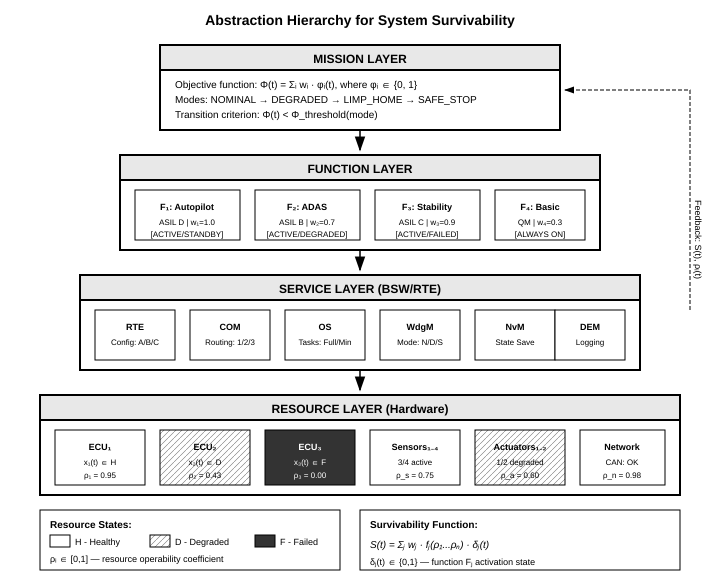
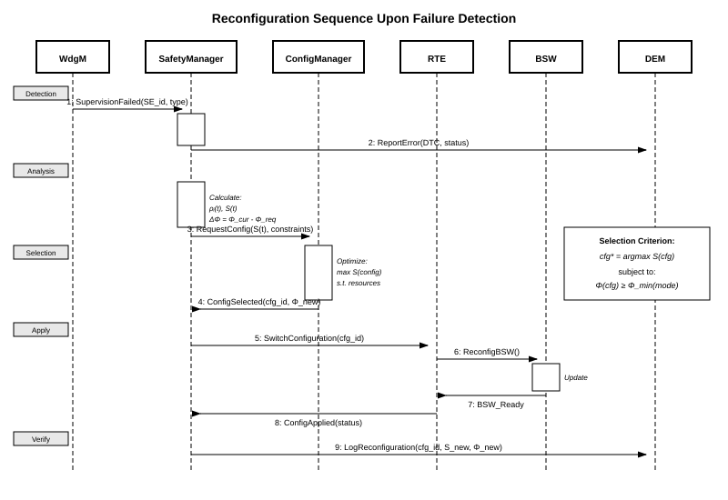

Was bleibt nach einem Ausfall noch möglich?
Wenn ein komplexes System einen Teil seiner Hardware verliert, muss seine Aufgabe nicht zwangsläufig enden. Entscheidend ist, was es noch leisten kann, welchen Informationen es vertrauen darf und ob eine Änderung seines Verhaltens sicher ist.
Die präzise wissenschaftliche Formulierung
Framework der Überlebensfähigkeit — Dieser Abschnitt bündelt den mathematischen Kern der Dissertation zu einem zusammenhängenden Framework: vom degradierten Regelobjekt und der Überlebensfähigkeitsmetrik bis zum Transformationsraum, zu Zeitbedingungen und zur Evolutionspolitik.
Als die Technik ausfiel, änderten sich das Ziel und der Weg dorthin.
Nach dem Unfall von Apollo 13 war eine Mondlandung nicht mehr möglich. Die Mondlandefähre, die für eine andere Aufgabe entwickelt worden war, wurde vorübergehend zur Lebenserhaltung der Besatzung eingesetzt. Die Ressourcen waren begrenzt; weniger wichtige Funktionen wurden zugunsten des wichtigsten Ziels aufgegeben: die sichere Rückkehr.
Dies ist ein historisches Beispiel für die Neuzuweisung von Ressourcen, keine Validierung unseres Algorithmus. Es verdeutlicht die Frage der Dissertation: Wie bestimmen wir, was noch möglich ist, und wie wählen wir einen sicheren weiteren Weg?
Apollo 13 als Fallstudie lesen ↗Vier Fragen statt „Funktioniert es noch?“
Stellen wir uns einen autonomen Roboter vor, bei dem ein Antrieb ausfällt. Das bedeutet weder, dass er gefahrlos weiterfahren darf, noch, dass alle Fähigkeiten verloren sind. Die Antwort erfordert aufeinanderfolgende Prüfungen.
- 01
Was ging verloren?
Ausgefallene oder geschwächte Ressourcen erkennen: Antriebe, Sensoren, Energieversorgung und Rechenleistung.
- 02
Was ist noch vertrauenswürdig?
Nicht nur die Hardware prüfen, sondern auch Modelle und Schätzungen, auf denen Entscheidungen beruhen.
- 03
Was ist noch zulässig?
Optionen ausschließen, die physikalisch unmöglich sind oder Sicherheitsanforderungen verletzen.
- 04
Was geschieht als Nächstes?
Nicht nur den nächsten Betriebsmodus wählen, sondern eine zulässige Folge von Änderungen mit zeitlichen Grenzen.
Der Roboter ist ein erklärendes Beispiel, kein Ergebnis eines eigenen Experiments.
Diese Idee lässt sich nun quantifizieren.
Die Dissertation definiert eine quantitative Größe für die Überlebensfähigkeit, S(t). Sie fasst zusammen, welcher Anteil der für die Mission relevanten Funktionsfähigkeit in der aktuellen Konfiguration erhalten bleibt. Berücksichtigt werden die verfügbaren Funktionen und der Zustand der dafür benötigten Ressourcen.
Mathematisches Modell: Dissertation §2.6. Modellgültigkeit: §2.7. Zulässige Übergänge: §2.8. Trajektorienplanung: §3.6.
Mathematisches Modell erkunden ↗Dies ist eine normierte Fähigkeitsbewertung innerhalb eines Modells — keine Wahrscheinlichkeit dafür, dass das System überlebt.
Sieben Teile des Frameworks — von der ersten Frage zur Entscheidung
Hier beginnt die vertiefte Lektüre. Jeder Teil hat eine eigene Seite; ihre Reihenfolge folgt der Dissertation. Die technischen Details können schrittweise erschlossen werden.
Nach einem Ausfall ist das System nicht mehr nominal.
Das nominelle Objekt P0 wird nach einer Schädigung zu Pd. Ab diesem Moment müssen Regelung und Rekonfiguration auf dem real degradieren Objekt und nicht auf der Entwurfsidealisierung beruhen.
Die Vier-Ebenen-Hierarchie: Ressource → Dienst → Funktion → Mission.
Im Kern steht die konstruktive Kopplung zwischen Ressourcen, Diensten, Funktionen und Mission. Dadurch wird Überlebensfähigkeit zur berechenbaren Größe S(t).
Leistungsfähigkeit und Zulässigkeit sind nicht dasselbe.
Das Framework trennt die Konfigurationsstruktur Φ(cfg), ihre nominelle Obergrenze S̄(cfg) und die aktuelle Überlebensfähigkeit S(t). Eine korrekte Supervisor-Entscheidung braucht alle drei.
Auch Modellgültigkeit ist eine Ressource.
Das Framework führt epistemische Ressourcen ein: Modelle, Schätzer, Identifikatoren und gelernte Politiken, deren Gültigkeit genauso überwacht werden muss wie der physische Zustand.
Rekonfigurationen bilden einen Transformationsraum, nicht nur eine Reaktionsliste.
Jede zulässige Konfiguration ist ein Graphknoten, und jeder erlaubte Übergang eine Kante. Dadurch wird Rekonfiguration zur Bewegung im Evolutionsgraphen.
Zeitbedingungen sind unabhängig: Aufgabe, Reaktion, Sequenz.
Das Framework muss drei unabhängige Zeitprüfungen bestehen: lokale Task-Deadlines, das Ende-zu-Ende-Reaktionsbudget und die minimale Verweildauer zwischen Rekonfigurationen.
Der Planer muss eine Trajektorie wählen, nicht nur den nächsten Knoten.
Wenn die gewählte Konfiguration über das gesamte Verweilintervall zulässig bleiben muss, wird aus einer Einstufen-Entscheidung die Wahl einer Evolutionspolitik.
Wie dieser Abschnitt gelesen werden kann
Direkt aus den Dissertationsabschnitten §§2.6–2.8, §3.6, §§4.2, 4.9–4.10 aufgebaut.
Schneller Einstieg
01 → 03 → 06
Was sich nach einem Ausfall ändert, wie Überlebensfähigkeit gemessen wird und welche Zeitbedingungen nicht verletzt werden dürfen.
Theoriepfad
02 → 04 → 05 → 07
Hierarchie, epistemische Ressourcen, Evolutionsgraph und Trajektorienpolitik.
Pfad zur Implementierung
02 → 06 → Implementierung
Von der Abstraktion zu Modulen und Zeitprüfung.
Technische Diagramme und frühere Modelldarstellungen öffnen
Diese Diagramme bleiben erhalten, um die Entwicklung der Forschung nachvollziehbar zu machen. Einige Symbole stammen aus früheren Modellständen; die aktuellen Definitionen von Überlebensfähigkeit und Zulässigkeit stehen in den Dissertationsabschnitten 2.6–2.8.
Framework der Überlebensfähigkeit
Dieser Abschnitt bündelt den mathematischen Kern der Dissertation zu einem zusammenhängenden Framework: vom degradierten Regelobjekt und der Überlebensfähigkeitsmetrik bis zum Transformationsraum, zu Zeitbedingungen und zur Evolutionspolitik.


Vom Modell zum Nachweis
Das Framework erklärt das Konzept der Überlebensfähigkeit. Publikationen, Monografie und registrierte Projekte dokumentieren die Entwicklung dieses Forschungsgebiets.